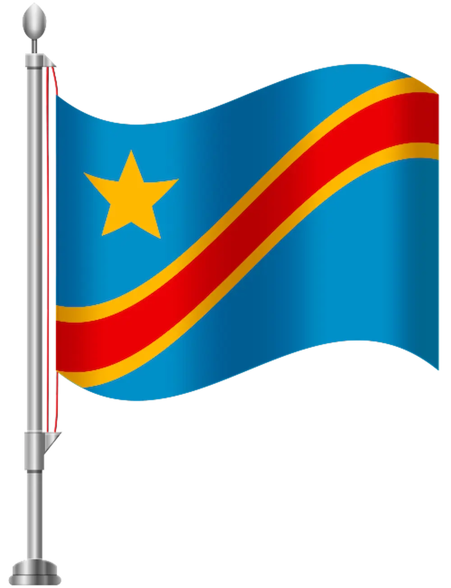

Here is the Place to Visit
Welcome to the Place to Visit. This page contains information about various places around the world. Click on the images to learn more about these places.
Welcome to the Place to Visit. This page contains information about various places around the world. Click on the images to learn more about these places.
The Democratic Republic of the Congo is a country located in Central Africa. It is the second-largest country in Africa by area and the eleventh-largest in the world. The country is known for its rich natural resources, including minerals such as cobalt and copper. The Congo River, the second-longest river in Africa, flows through the country, providing a vital waterway for transportation and trade. Despite its natural wealth, the country faces challenges such as political instability and poverty. The capital city is Kinshasa, which is also the largest city in the country. Learn more about the Democratic Republic of the Congo
Paris is the capital city of France and is known for its art, culture, and history. The city is home to iconic landmarks such as the Eiffel Tower, the Louvre Museum, and Notre-Dame Cathedral. Paris is also famous for its fashion, cuisine, and romantic atmosphere. The city has a rich history that dates back to the Roman times and has been a center of art, philosophy, and politics for centuries. Paris is a popular tourist destination and attracts millions of visitors each year. Learn more about Paris, France
Sydney is the largest city in Australia and is known for its stunning beaches, vibrant culture, and iconic landmarks. The city is home to famous attractions such as the Sydney Opera House, Bondi Beach, and the Sydney Harbour Bridge. Sydney is a diverse and multicultural city that offers a wide range of activities and experiences for visitors. The city is also a hub for arts, entertainment, and dining, making it a popular destination for tourists from around the world. Learn more about Sydney, Australia